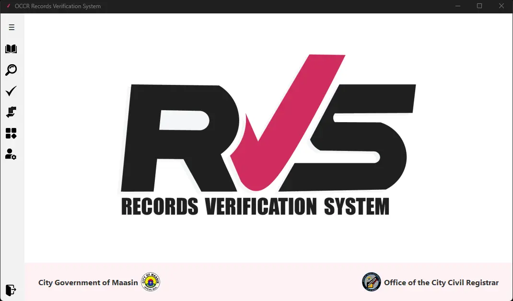
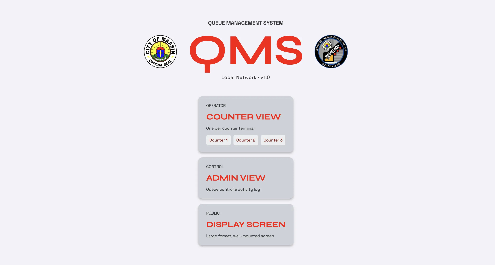
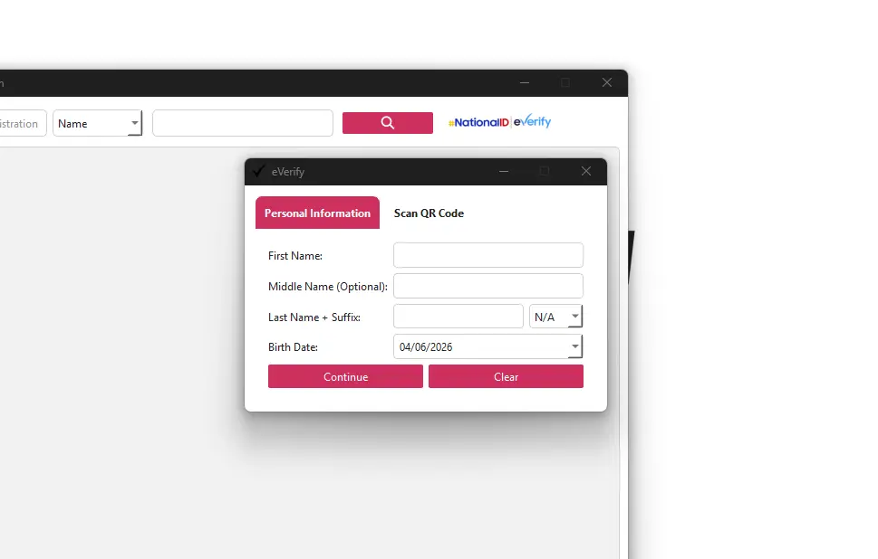
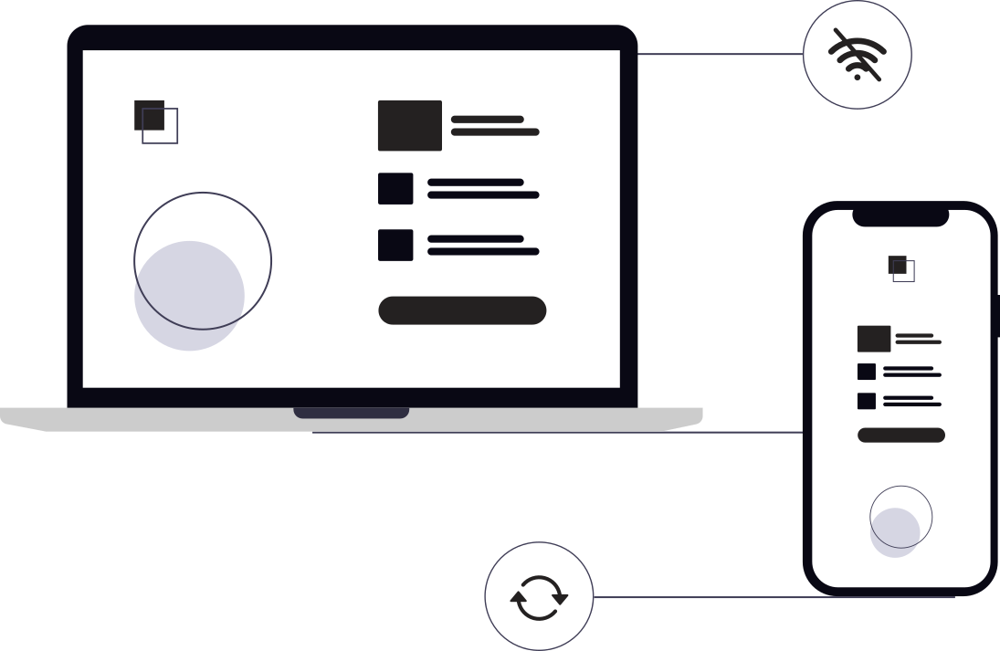
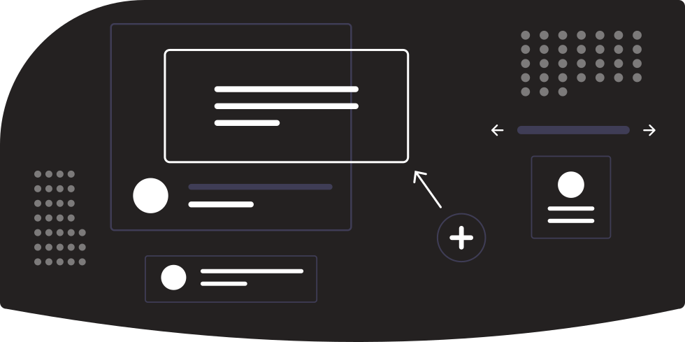
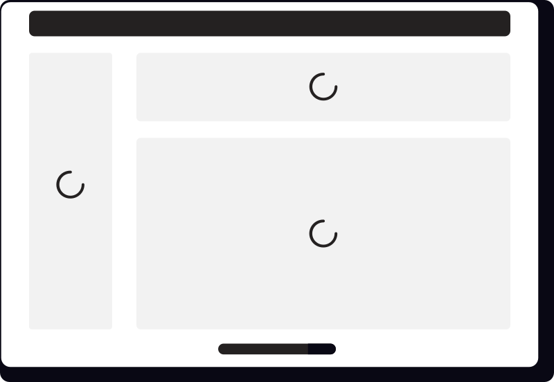
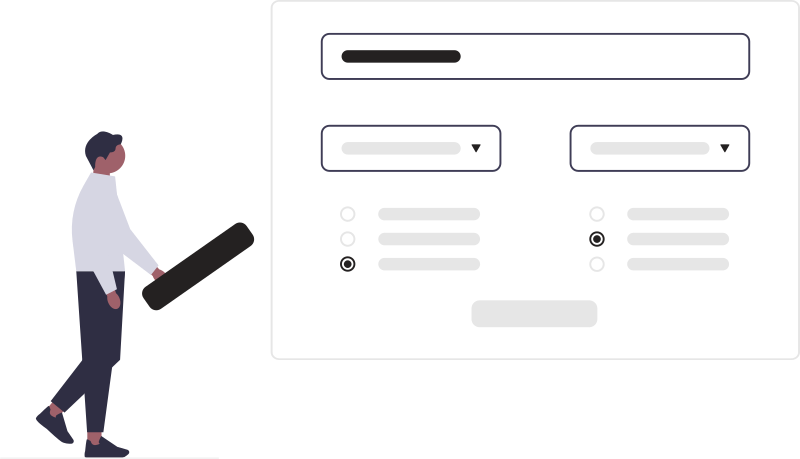
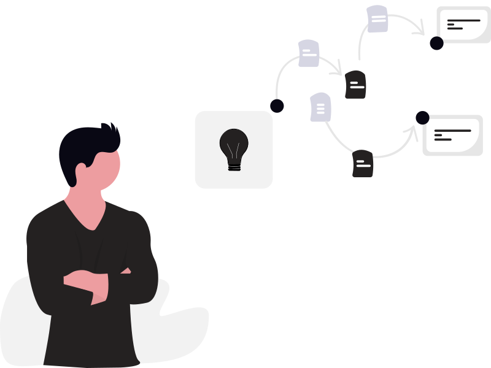

ariel cortel
Design Engineer
I design the system. I build the solution.
my projects

Records Verification System
Python
PySide6
Flask
Problem: The City Civil Registrar's Office of Maasin City relied entirely on manual methods to verify civic records — flipping through aging record books, handwritten notes, and manual data entry. The process was slow, error-prone, and inconsistent, leading to long queues, delayed releases, and growing frustration for both staff and citizens.
What I did: I designed and developed the Records Verification System — a desktop application that digitizes the full records verification workflow for vital documents (Birth, Death, and Marriage). It replaces manual cross-checking with a structured digital process, eliminating clerical errors, reducing fraud risk, and cutting wait times for citizens.

Queue Management System
HTML
CSS
JavaScript
Problem: The City Civil Registrar's Office of Maasin City had no structured system for managing walk-in clients. Staff manually controlled the flow of people, leading to disorganization, uneven counter loads, and zero visibility into queue status — how many had been served, how many were still waiting.
What I did: designed and developed the Queue Management System (QMS) — a real-time, network-based system that brings order to the walk-in queue, gives staff the tools to manage it directly from their counters, and gives administrators full visibility and control over daily operations.

National ID Authentication Service Integration (eVerify)
Flask
Python
PySide6
Problem: The City Civil Registrar's Office of Maasin City had no formal process for verifying client identities before releasing vital records. With no authentication step in place, the office was exposed to fraud risk and potential Data Privacy Act violations — anyone could claim to be someone else and walk out with sensitive documents.
What I did: I integrated the Philippine Statistics Authority's National ID Authentication Service directly into the Records Verification System. The feature authenticates clients via QR code scan or personal details entry, followed by a face liveness check — confirming the person presenting the ID is physically present. Built with Python, PySide6, and Flask, it adds a compliant identity verification layer to the records release workflow without disrupting staff operations.
my services
Web App Development
Build modern, fast web apps.

Turn your idea into a fully functional web application that works smoothly on any device.
UI/UX Design
Design how it works, not just how it looks.
I create clean, intuitive interfaces that guide users naturally and make tasks easy.
Design Systems
Keep everything consistent as you grow.

I design reusable layouts and patterns so your product stays consistent and easier to maintain over time.
Frontend Development & Animations
Bring your product to life.

From precise layouts to smooth interactions, I make your design feel polished and responsive.
Interactivity & Logic
Make your product actually work.

Forms, user actions, real-time updates — I build the features that make your product useful.
Problem-Solving
Solve real product challenges.

Whether it's a broken feature or a messy system, I find practical solutions that move things forward.
about me
I bridge the gap between architectural logic and visual clarity.
My background in IT operations within the public sector has taught me that the most impactful digital tools are those built on robust, reliable systems. I don't just design surfaces; I think in connections, workflows, and structural integrity. As a Design Engineer, I focus on building functional systems where the code is as intentional as the interface.
I approach frontend development with a "systems-first" mindset. Whether I’m refining a design system or engineering a service booking platform, my goal is to translate complex organizational needs into seamless user experiences. I believe that design is a problem-solving engine, not just a layer of paint, and I build with a focus on how every component connects to the larger whole.